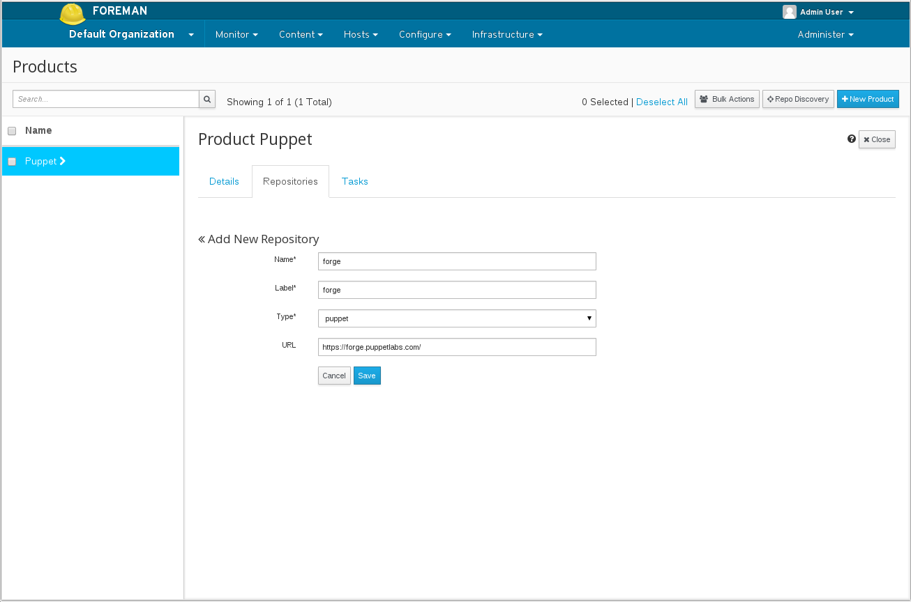

2.1: Puppet Integration
Managing Puppet Content
Importing the Puppet Forge
The Puppet Forge is a collection of puppet modules written by the community which can be used to manage hosts in Katello. These modules can be used in content views as described in the content views guide in order to configure the running hosts.
To import the puppet forge navigate to
Content > Products
Click on the +New Product button.
Once the product is created, select the product and click the Create Repository
button. Fill out the repostitory as shown:

This can be done via the CLI:
hammer product create
--organization "Default Organization"
--name Puppet
hammer repository create
--organization "Default Organization"
--product Puppet
--name forge
--content-type puppet
--url "https://forge.puppetlabs.com/"
The repository can now be synced.
Importing Puppet Modules from Git
In order to allow users to import puppet modules from Git repositories, Katello comes with a tool called ‘pulp-puppet-module-builder’ from the pulp-puppet-tools RPM. This utility will be available on the Katello server but it can also be installed on another machine if desired. By running the ‘pulp-puppet-module-builder’ against a Git repository, it will checkout the repository, build all of the modules, and publish them in a structure Katello can synchronize.
The most common method is to run the utility on the Katello server itself and publish to a local file system directory and sync against that directory.
mkdir /modules
chmod 755 /modules
pulp-puppet-module-builder --output-dir=/modules --url=git@mygitserver.com:mymodules.git --branch=developThis will checkout the ‘develop’ branch of the Git repository located at ‘git@mygitserver.com:mymodules.git’ and publish them to the /modules directory. Then, from within Katello, simply set the url on your Puppet Repository to ‘file://modules’. You can now sync the Repository just like any other Repository.
If you are running this on a remote machine, you will need to publish the containing to folder to a location accessible by HTTP or HTTPS.
mkdir /var/www/html/modules/
chmod 755 /var/www/html/modules/
pulp-puppet-module-builder --output-dir=/var/www/html/modules --url=git@mygitserver.com:mymodules.git --branch=developThen in Katello, simply enter ‘http://HOSTNAME/modules/’ for the Repository url and sync it like you normally would.